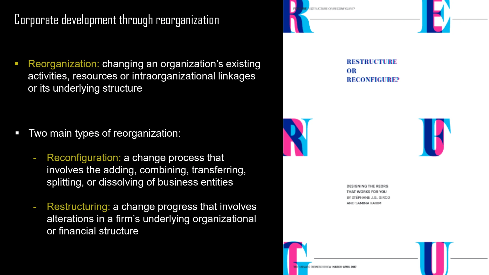

The framework
| Choice | Mechanism | Strategic implication |
|---|---|---|
| Organic growth | Enter a new business using and developing internal resources and capabilities. | Development depends on the firm's own capacity to build the required activities. |
| Network-based growth | Enter through an alliance or cooperative arrangement. | Access and learning depend on the relationship and its governance. |
| Acquired growth | Enter through a merger or acquisition. | Ownership changes, but integration and capability transfer still require work. |
| Reconfiguration | Add, combine, transfer, split or dissolve business entities. | Change the configuration of the portfolio. |
| Restructuring | Change the underlying organizational or financial structure. | Alter how the organization is arranged or financed. |
Key distinctions
Divestiture formats
In a spin-off, shares in a separated business are distributed proportionately to existing shareholders. In a split-off, shareholders choose between shares in the parent and shares in the separated entity. A sell-off transfers the business to another firm; an equity carve-out sells a portion of a subsidiary's shares to public investors, typically while the parent retains considerable ownership. The course also lists liquidation.
Downscoping versus downscaling
Downscoping narrows the range of businesses or markets. Downscaling reduces the resource base or output while keeping the scope intact. A reorganization can therefore reduce size without fundamentally changing the kinds of business the firm operates.
Ownership has costs
The lecture highlights the administrative burden, incentives, capital allocation and political costs of bringing a stand-alone business inside a corporation. A complete growth decision compares the benefits with those costs.
How to use it
- Define the strategic objective before selecting a transaction or arrangement.
- Compare internal development, cooperation and acquisition against that objective.
- Distinguish changes in ownership, corporate scope and operating scale.
Keep in mind
These are course-level conceptual descriptions of organizational choices, not transaction or legal advice. Growth and exit labels alone do not determine value creation.
How can a company become smaller without downscoping?
Reveal the explanation
It can cut capacity or resources while continuing to operate in the same business areas.
Read the classroom original
Complete pages from the supplied lecture slides. Select a page to read, enlarge or browse its extracted text. Page numbers refer to the PDF’s physical page order.
